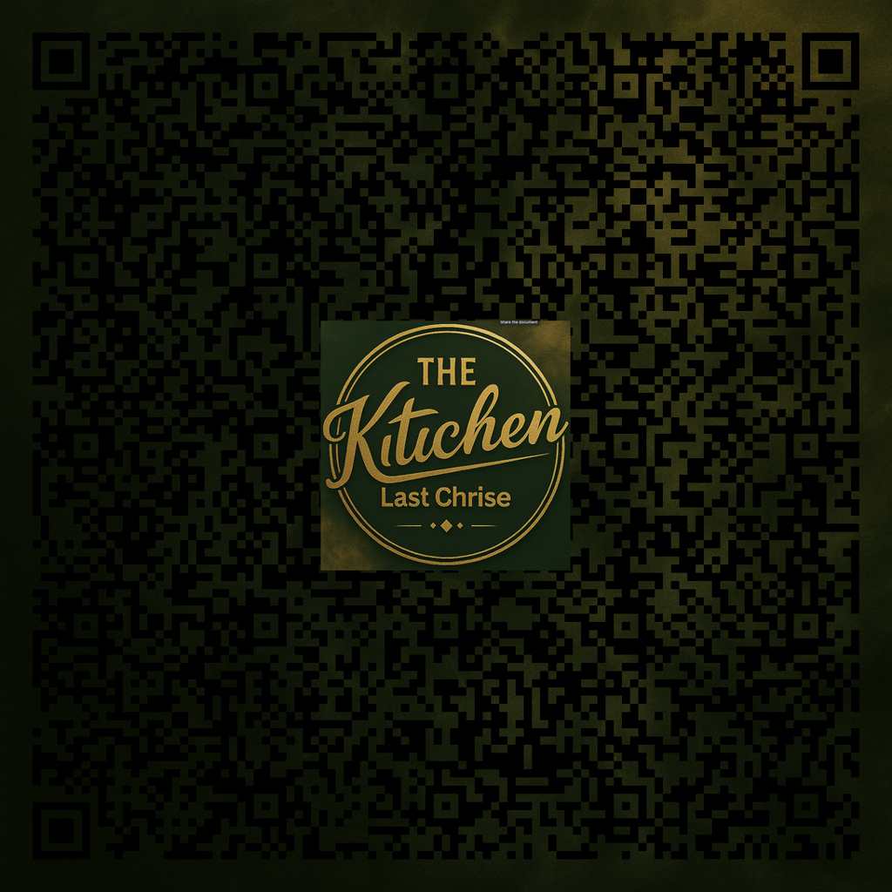

The Gate
Scan the QR to reveal a short, poetic message. This page is intentionally minimal — the QR reveals a private-styled message and nothing that facilitates transactions or contact requests.

Scan the QR with your phone to reveal the entry message.
Note: this is a public, conceptual gate for poetic reveal only — no links to purchasing or operational instructions. Replace `qr_contact.png` with your own QR image that points to `reveal.html` if you want that behavior.